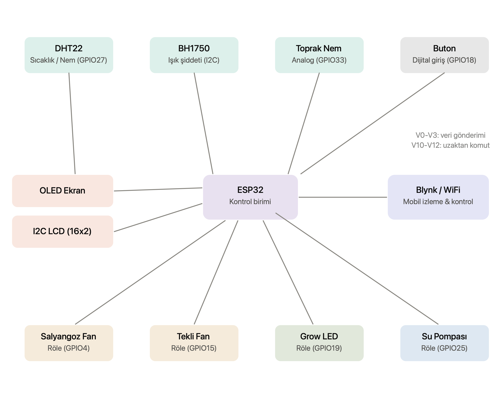
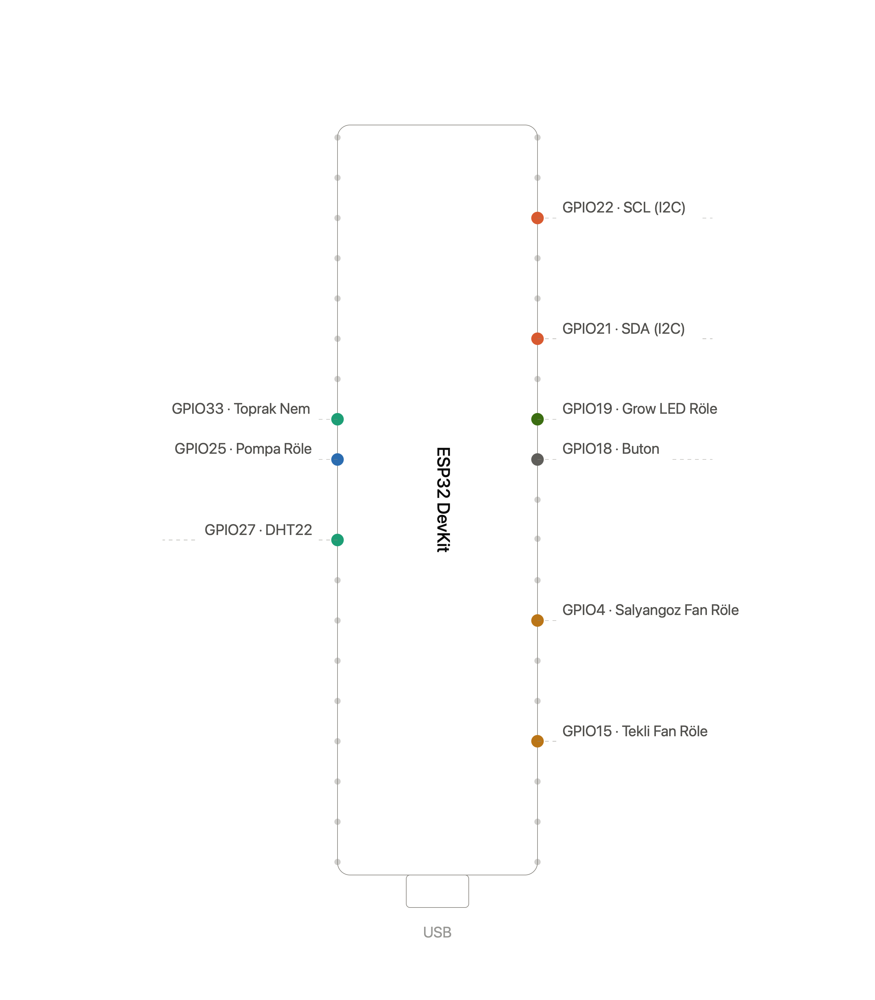

Ege Üniversitesi Mekatronik Bölümü bitirme projem olan bu çalışma, bitkilerin ideal yaşam koşullarını korurken, hava filtrasyonu ile kullanıcıyı alerjenlerden koruyan otonom bir mikro-klima kabinidir. ESP32 tabanlı hibrit bir otomasyon sistemine sahiptir[cite: 1].

